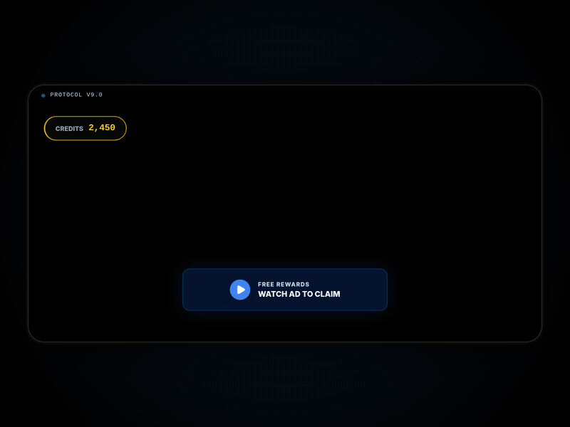

AdQuest transforms passive ad viewing into active, game-like engagement. 93 unique users, 118 sessions. All evidence in data_evidence.txt.

Metrics from data_evidence.txt — 93 unique real users from A/B tests. Developer sessions excluded. Control group = users who clicked a button and were forced to wait 10 seconds for a reward. AdQuest group = users who watched a video and solved a challenge to earn the reward.
| Metric | Control (Forced Wait) | AdQuest (Gamified) | Result |
|---|---|---|---|
| Sessions | 36 | 51 | — |
| Avg. Engagement | 6.9s | 13.7s | 2x longer |
| Challenge Completion | — | 27% | — |
| Total Real Users | 93 users, 118 sessions | ||
Control group clicked a button and were forced to wait 10 seconds before receiving a reward. Average 6.9s means many users abandoned before the wait was over — forced waiting = friction = user drop-off. AdQuest group voluntarily watched a video and solved a challenge. Average 13.7s means users stayed longer despite having more to do. The key insight: gamified engagement beats forced waiting, even when it requires more effort.
27% completion rate means 1 in 4 users who engaged with the challenge proved their attention. Compared to the control group where users abandoned a 10-second forced wait, AdQuest keeps users engaged through voluntary participation. The shift from passive waiting to active challenge is the core innovation.
Friction scores are modeled from engagement patterns in our prototype tests, not directly measured. A larger sample is needed to validate these values statistically.
This is a single user case study, not a statistical proof. However, it demonstrates that the reward system can create voluntary return behavior — a key differentiator from standard ads.